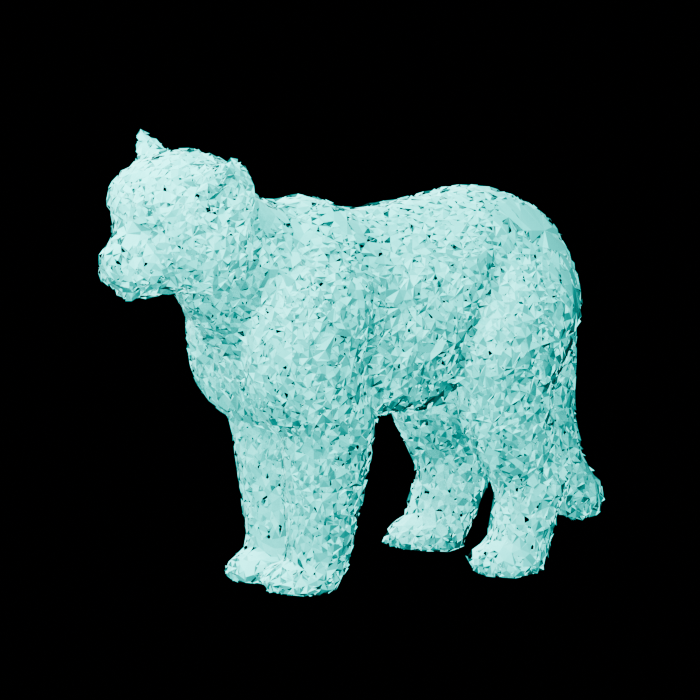
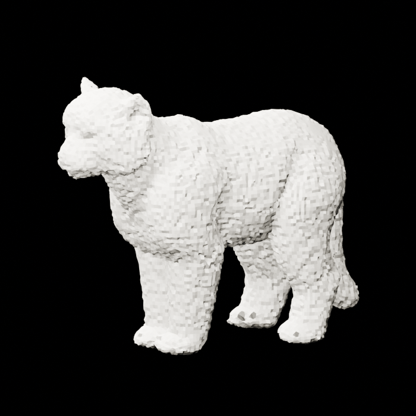
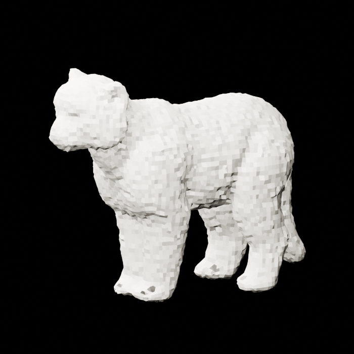
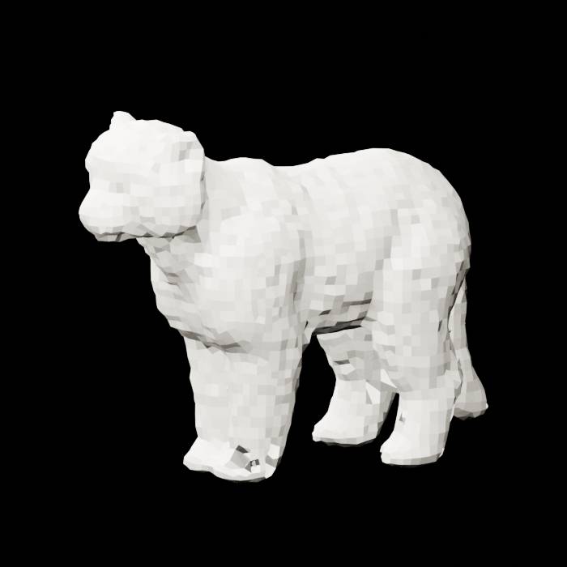
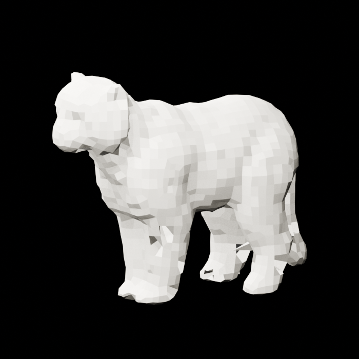
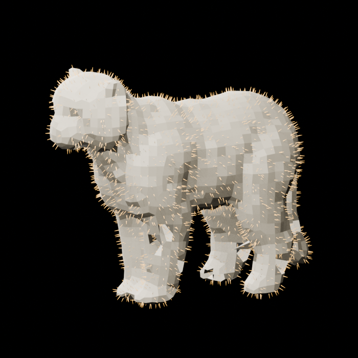

Malformed MLX coat to clean carrier
Exact seed 80301: carrier recovery admitted
The assay replays the previously admitted relative_area > 0.3025011084360847 selection exactly: 38,305 of 41,141 cast triangles. No new classifier and no GPU inference are introduced. Four CPU voxel-fusion scales test whether that noisy outer coat measurement contains a recoverable organism-shaped carrier.
Authenticated source


Carrier sweep
| Voxel scale | Faces | Components | Fixed-view silhouette IoU | Disposition |
|---|---|---|---|---|
| 0.008 diagonal | 19,956 | 1 | 0.9849 / 0.9873 / 0.9858 | Metric nominee; visually retains failure relief |
| 0.012 diagonal | 8,778 | 1 | 0.9837 / 0.9830 / 0.9859 | Admissible |
| 0.018 diagonal | 3,932 | 1 | 0.9839 / 0.9785 / 0.9822 | Admissible |
| 0.026 diagonal | 1,902 | 1 | 0.9777 / 0.9691 / 0.9755 | Visually selected clean carrier |




Visual selection
The highest-IoU candidate was rejected for carrier use after inspection because it preserved the exact failure texture the reconstruction was meant to remove. The selected 0.026d shell keeps one connected component, 97.9–98.4% of axis bounds, and at least 96.9% silhouette IoU while visibly suppressing the malformed coat relief.
Static groom witness

Claim boundary: this is not a volume-matched fur replacement. The recovered carrier follows the outer malformed coat volume, not an authenticated underlying skin. The next assay must inset the carrier and calibrate strand length and density against the original three fixed-view silhouettes.